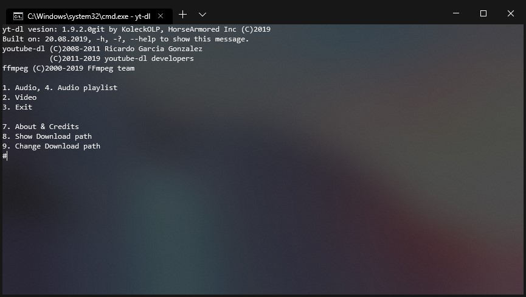
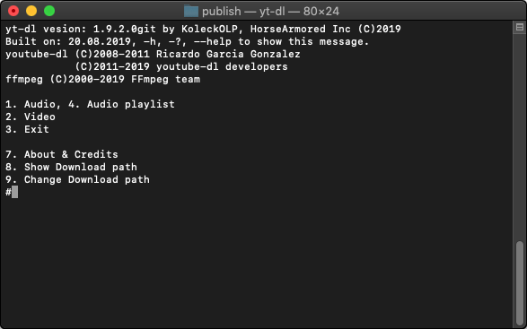

yt-dl
is a multiplatform comandline "simplifier" for youtube-dl, that let's you download videos in any quality including 1080p and 4K, also convert to mp3 if you want
get yt-dl here
get youtube-dl here
get ffmpeg here
Installing it is really simple on all three platforms (Windaws, Linux, MacOS)
- Download yt-dl, youtube-dl and ffmpeg for your platform (or compile yourself if I don't build for your platform)
- Extract it somewhere where it will stay and add youtube-dl and ffmpeg bindaries
- on linux and mac make the yt-dl executable with "sudo chmod +x yt-dl"
- On MacOS you need to launch terminal and navigate to the folder. Clicking the executable doesn't make your execution path the folder it's in(but it work on windows)
- If it doesn't work after this add the folder with all these files to your PATH (sorry you have to google how)
Here is example of the Windaws versian running in Windows Terminal
And the MacOS version
